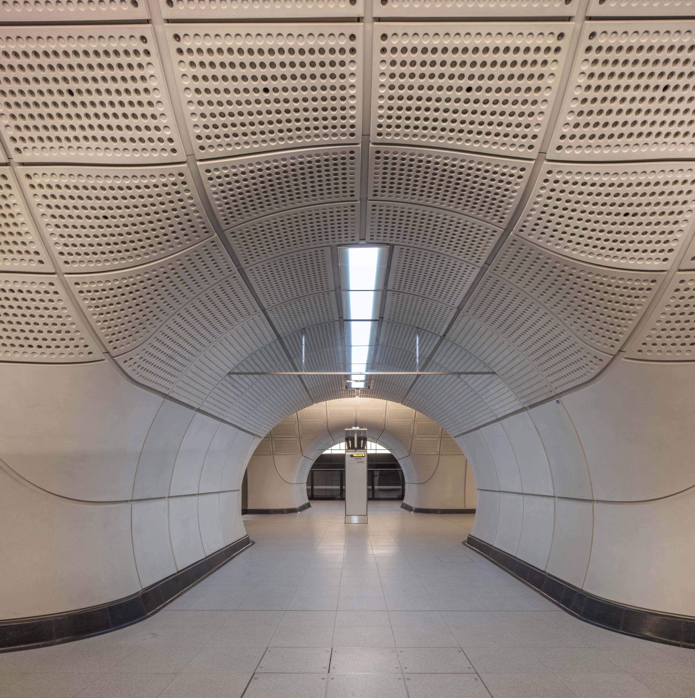
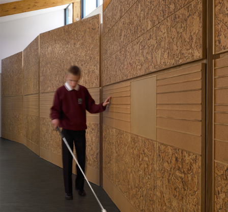
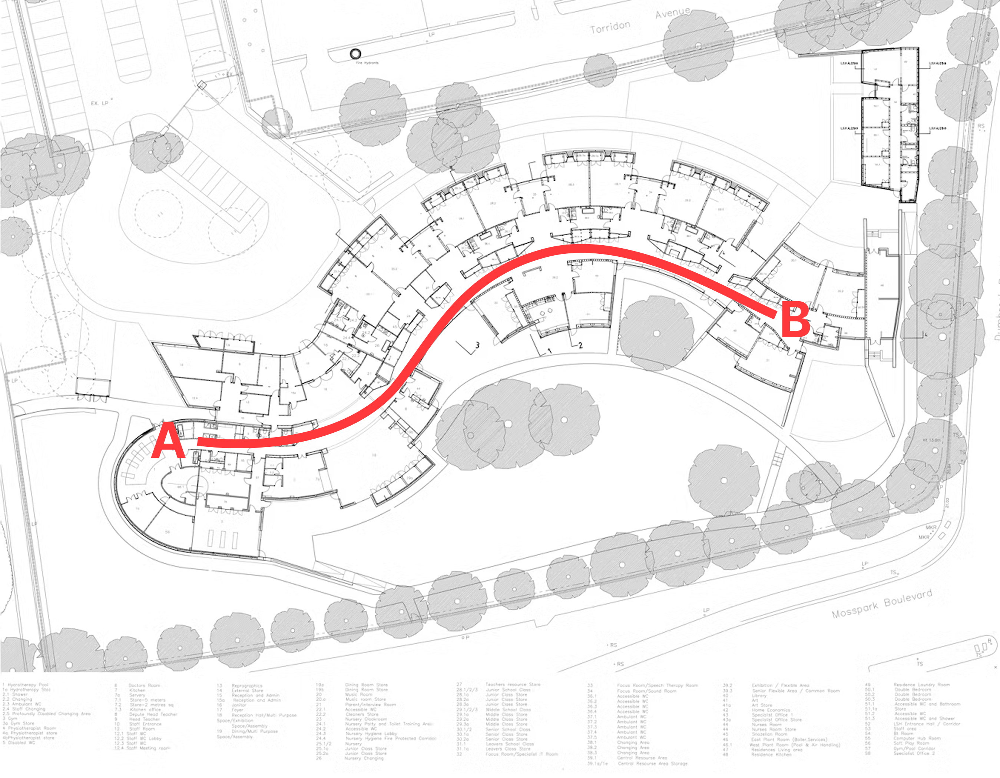
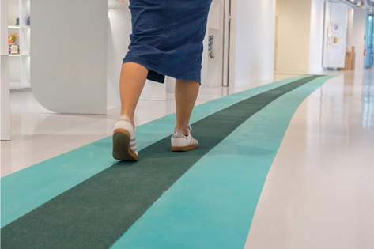
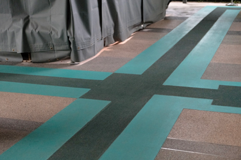

01
Visual Cues
Elizabeth Line
Lighting and contrast make routes and decision points easier to read.
How visual and tactile cues support confident movement in public spaces.
This digital appendix extends the brochure through three selected case studies. Each case shows how public spaces can use visual, tactile, or combined sensory cues to support safer and more confident navigation.
Three examples, three types of spatial guidance.
These cases were selected because they each show a different way of supporting visually impaired users in public spaces. Together, they help translate our research findings into clear design references.
Elizabeth Line
Lighting and contrast make routes and decision points easier to read.
Hazelwood School
Continuous tactile walls help users confirm direction and location.
The Enabling Village
Color contrast and tactile surfaces work together to guide movement.
The cases are not presented as perfect solutions, but as references for understanding inclusive wayfinding.
Inclusive routes are built through connected cues.
Across the three cases, inclusive design is not about adding isolated accessible features. It is about creating continuous cue systems that help people read space, confirm direction, and move with confidence.
Make routes and decision points easy to understand.
Keep visual and tactile cues connected along the route.
Let users verify direction through touch, contrast, sound, or landmarks.
Keep accessible routes safe, clear, and predictable.
Design the route, not just the object.
The Elizabeth Line | London, United Kingdom
The Elizabeth Line offers a useful visual case. Its station lighting uses cooler light in movement areas and warmer light in places where passengers pause and choose a route. This difference helps make space more readable without adding too many signs.



Hazelwood School | Glasgow, United Kingdom
Hazelwood School was designed for children and young people with dual sensory impairments. Its cork-clad sensory wall and trail rail provide steady touch feedback along the route, helping students confirm their location and move with more freedom
The Enabling Village | Singapore
For low-vision visitors, high-contrast block colors differentiate building zones and walking paths. This visual clarity is simultaneously reinforced by varying tactile intensities: the darker, central areas of the path provide stronger tactile feedback, while the lighter, peripheral areas offer weaker tactile sensations.

